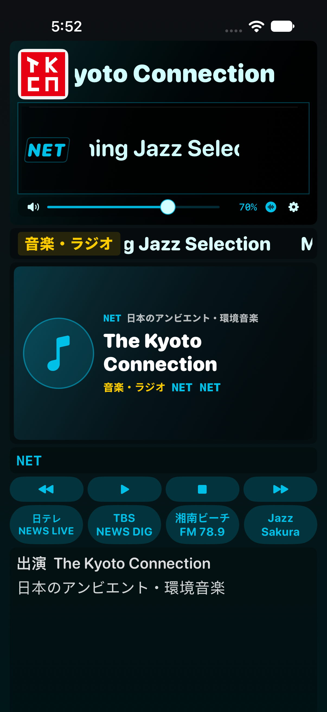

실기기 확인용 시험 빌드
iOS 17.0 이상. SideStore에서 서명해 설치합니다. 기존 앱을 삭제하지 않고 같은 Apple 계정으로 업데이트하세요.
Build 91의 잡음 제보에 따른 수정 시험판입니다. NET·한국 방송의 게인 계산과 보정값은 유지하고, 음성 조각마다 샘플을 잘라내거나 재생 시각을 다시 지정하던 출력 방식을 연속 재생으로 변경했습니다. 기존 화면과 일본 radiko·NAS 재생 경로는 변경하지 않았습니다.

실제 iPhone 시뮬레이터 캡처입니다. 프로그램명은 검사용 예시이며, 긴 제목은 표시창 안에서 가로로 흐릅니다.
검증: 계산 테스트·iOS 시뮬레이터의 실제 믹서 출력 녹음 및 파형 연속성 검사. 사용 중인 iOS 26.7.1 실기기에서 잡음이 사라졌는지와 영상 동기화는 별도 확인이 필요합니다. 모든 실시간 방송을 실기기에서 측정한 결과는 아닙니다.
SHA-256c8b7c03ce6e302133045716b666945b43ec1753adba7a916a53e4c4a53523e9a